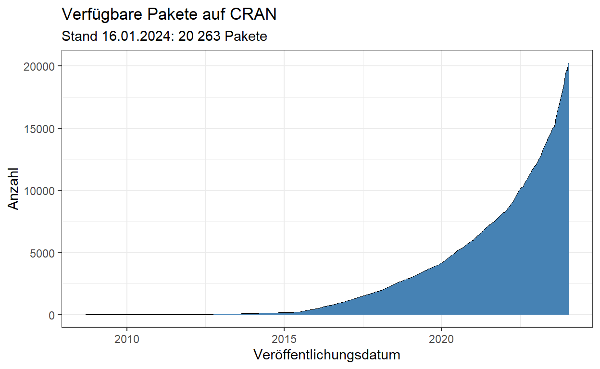
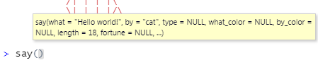
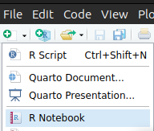
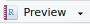

Was du in diesem Tutorial lernst:
Pakete installieren und in die aktive Sitzung laden
Der typische Aufbau von Funktionen und Argumenten in R
Die Benutzung der Hilfe-Seiten
Was sind Skripte? Erstellen und speichern.
Code und Outputs zusammen als R Notebooks abspeichern.
Pakete
Was R so mächtig macht, sind die von der Community veröffentlichten und gepflegten Erweiterungen drum herum. Stand 2023 gibt es knapp 20.000 offiziell veröffentlichte Pakete auf CRAN. Dieses Akronym steht für Comprehensive R Archive Network und ist die offizielle Adresse für geprüfte Erweiterungen. Es sei aber erwähnt, dass es auch noch andere Orte gibt, wo Pakete veröffentlicht werden können, zum Beispiel Bioconductor, GitHub und andere. Deswegen ist die Gesamtzahl aktiv gepflegter Pakete wohl noch höher als 20.000.
Pakete von CRAN reichen für unsere Anwendungszwecke vollkommen aus
und können über den einfachen Befehl
install.packages("Paketname") installiert werden - das ist
unkompliziert, du musst keine Internetseiten besuchen, keine Dateien
irgendwo hinschieben oder ausführen, das wird alles intern von dieser
Funktion erledigt.

Woraus bestehen Pakete?
Üblicherweise enthalten Pakete neue Funktionen, die das Leben von R-Nutzenden irgendwo erleichtern sollen. Manchmal werden Pakete auch genutzt, um Datensätze bereitzustellen, oder andere, außergewöhnlichere Sachen wie z.B. die interaktiven Tutorials, die du im Moment betrachtst - diese stammen auch aus einem Paket, was wir für dich geschrieben und auf GitHub veröffentlicht haben.
Ein Paket installieren
Wir installieren und nutzen heute ein Paket, um spielerisch den typischen Umgang mit Funktionen in R zu erlernen.
Es heißt cowsay und stellt eine einzige neue Funktion
namens say() bereit, mit der wir lustige Tiere lustige
Dinge sagen lassen können.
Hier im Tutorial musst du das Paket nicht mehr installieren - vermutlich wurdest du gefragt beim Start des Tutorials, ob fehlende Pakete installiert werden sollen. Das solltest du bejahen, und dann erledigt RStudio das automatisch für dich.
Aber solltest du mal eigenständig ein Paket installieren wollen, ist wichtig zu wissen wie es geht:
Der Befehl zum Installieren lautet:
install.packages("cowsay")Ersetze cowsay durch den Namen des gewünschten
Pakets.
Häufige Fehler beim Installieren von Paketen
- Achte auf die Anführungszeichen um den Paketnamen!
Eine der häufigsten Fehlerquellen beim Installieren von Paketen sind vergessene Anführungszeichen.
installed.packages()ist etwas anderes alsinstall.packages()!
Ersteres gibt dir eine Liste aller auf dem Gerät installierten Pakete, zweiteres ist das was du brauchst um Pakete zu installieren.
- Du brauchst eine funktionierende Internetverbindung.
Tipp: Dass ein länger dauernder Befehl in der Konsole fertig ausgeführt ist, wie z.B. die Installation eines Pakets, erkennst du daran, dass das rote Stoppzeichen oben rechts in der Konsole erlischt.
Das Paket nutzen
Jetzt hast du also ein Paket installiert, nämlich
cowsay, welches wir in diesem Tutorial nutzen möchten. Nun
liegt es mit allen anderen installierten Paketen in einer Art
„Bibliothek“ auf deinem Rechner. Um es tatsächlich nutzen zu können,
muss der gewünschte Inhalt aus der Bibliothek geholt werden und in die
aktive Sitzung geladen werden.
Es gibt zwei Wege, an den Inhalt eines bereits installierten Pakets zu gelangen:
- Du lädst alles aus dem gesamten Paket in die aktive Sitzung mit
library(Paketname). - Du addressierst nur bestimmte Inhalte aus dem Paket mit
Paketname::Inhalt.
Beide Varianten werden dir begegnen. Wobei die erste
(library()) häufiger ist, weswegen wir uns erst mal diese
anschauen.
Aufgabe
Lade das gesamte Paket cowsay in die aktive Sitzung, um
im nächsten Schritt Funktionen daraus benutzen zu können!
Verwende dafür die Funktion library().
library(cowsay)Achtung
library() funktioniert im Gegensatz zu
install.packages() ohne Anführungszeichen um den
Paketnamen.
Wenn du willst, kannst du dir das erklären lassen- ansonsten nimm es einfach hin. Hier ist meine persönliche Erklärung, die das für mich logisch macht:
Text ohne Anführungszeichen wird von R als Aufruf eines Objekts verstanden. Das funktioniert nur, wenn das Objekt bereits erstellt ist und “aufrufbar” ist. Die Pakete in der Bibliothek sind bereits vorhanden, existieren also als “Objekte” für R und warten nur noch darauf, aus dem Regal geholt (aufgerufen) zu werden.
Hingegen wird Text mit Anführungszeichen von R dann tatsächlich als
Text interpretiert. Das ist zum Beispiel bei
install.packages() nötig, weil es das Paket noch nicht als
existierendes Objekt im Regal gibt.
Von außen ist nicht erkennbar, ob etwas passiert ist, aber die Abwesenheit einer Fehlermeldung ist ein gutes Zeichen dafür, dass das Paket nun in die aktive Sitzung geladen ist. Prima!
Gut zu wissen:
R lädt zu Beginn einer neuen Sitzung nur eine handvoll essentieller Pakete. Diese automatisch geladenen Pakete werden unter dem Namen “base R” zusammengefasst und enthalten die notwendige Grundsubstanz, damit R funktioniert, und ein paar Erweiterungen. Alle anderen Pakete bauen auf diesen Grundsteinen auf.
Dann können wir nun endlich zum Hauptteil dieses Tutorials übergehen - jetzt wurde von Paketen gesprochen, die Funktionen bereitstellen sollen; nun wird es Zeit, dass du mal eine Funktion in Aktion siehst.
Funktionen und Argumente
Hier siehst Du, was das Paket cowsay kann:
Es stellt die Funktion say() zur Verfügung, mit der wir
kleine Text-Tiere Sätze sagen lassen können.
Lass das Huhn einen anderen Satz sagen, in dem du einen anderen Text
beim Argument what eingibst!
say(what = "R is fun!", by = "chicken")
-----
R is fun!
------
\
\
_
_/ }
`>' \
`| \
| /'-. .-.
\' ';`--' .'
\'. `'-./
'.`-..-;`
`;-..'
_| _|
/` /` [nosig]
Was ist ein Argument?
Eine Funktion folgt typischerweise der Form
funktion(Argument1 = Wert, Argument2 = Wert, …)
say(what = "R is fun!", by = "chicken")Die Argumente einer Funktion stehen in den Klammern.
Sie spezifizieren, was die Funktion genau tun wird.
Das erste Argument ist gewöhnlicherweise der Datensatz, mit dem die
Funktion etwas tun soll.
In unserem Fall erwartet es Text als Daten.
Dass es sich um Text handelt, wird mit den Anführungszeichen
" signalisiert.
Guter Stil
Achte darauf, die = mit Leerzeichen zu umgeben, und nach
den trennenden Kommata ebenfalls Leerzeichen zu verwenden!
Die Hilfefunktion
Die brennende Frage im Moment ist: Was gibt es denn noch alles für
Tiere außer chicken?
Das erfahren wir über die Hilfeseite der Funktion
say().
Alle Funktionen in öffentlichen Paketen müssen auf einer Hilfeseite
dokumentiert sein.
Auf der Hilfeseite werden alle möglichen Argumente aufgelistet, die eine
Funktion entgegennehmen kann, und die möglichen Werte dieser Argumente.
Also auch das Argument by und alle Tiere, die zur Verfügung
stehen - und das ist ja die Information, die wir selektiv suchen!
Um in RStudio die Hilfe aufzurufen, geh mit dem Cursor in den Namen
der Funktion (z.B. say) und drück F1. Das funktioniert aber
nicht im Tutorial.
Eine andere Option ist, ?say, oder
help(say).
Tipp für das Lesen der Hilfe:
Die Hilfeseiten sind oft eher an Vollständigkeit als
Anfängerfreundlichkeit orientiert und versuchen, auf alle Spezialfälle
einzugehen, die überhaupt vorkommen können. Deswegen wirkt die Hilfe
anfangs unübersichtlich und technisch.
Versuche zu lernen, aktiv auszublenden, was du nicht verstehst, und krame dir nur die Informationen heraus, die für dich Sinn ergeben.
Hilfeseiten sind immer gleich aufgebaut:
- Description
- Usage
- Arguments
- Details
- Examples
Nutze ?, um die Hilfeseite für die
Funktionsay() aufzurufen! Schauen selektiv nach der
Information, welche Tiere alle beim Argument by möglich
sind.
Blende Unverständliches und schlechte Formatierung möglichst aus (weil wir uns im Tutorial befinden werden die Überschriften komisch dargestellt).
?saysay(what = "R is fun!", by = "stegosaurus")say(what = "catfact", by = "cat")
say(what = "fortune", by = "rms")(Nach dem Lesen der Dokumentation fragst du dich vielleicht: wer oder
was ist ein rms? Antwort hier)
Default-Werte
say()
--------------
Hello world!
--------------
\
\
\
|\___/|
==) ^Y^ (==
\ ^ /
)=*=(
/ \
| |
/| | | |\
\| | |_|/\
jgs //_// ___/
\_)
say() gibt auch ohne jegliche Argumente etwas aus. Das
hat mit Default-Werten zu tun.
Die meisten Funktionen haben Default-Werte für alle Argumente. Das
heißt, Argumente, die nicht spezifiziert werden, nehmen ihren
Standardwert an.
Diese Default-Werte findst du in den Hilfeseiten unter dem Abschnitt
Usage, und sie werden dir in RStudio angezeigt in einem
kleinen gelben Kästchen, sobald du die Klammer hinter dem Funktionsnamen
antippst.

Reihenfolge der Argumente
say("Hello!", "chicken")gibt genau das gleiche aus wie
say(what = "Hello!", by = "chicken")Die Argumentnamen können weggelassen werden, wenn die Argumente in genau der Standardabfolge eingegeben werden, wie sie auch in den Hilfeseiten angegeben ist. Auf Englisch wird das positional arguments gennant.
Eine übliche Konvention ist, das Datenargument (das erste) nicht zu bennenen, weil es einfach so häufig ist, und die anderen Argumente dann zu bennennen.
say("Hello!", by = "chicken")Verkehrte Reihenfolgen wie
say(by = "chicken", what = "hello")würden ebenfalls funktionieren, aber nur so lange die Argumente benannt sind. Guter Stil ist es allerdings nicht, da es das Lesen von Code anstrengender macht, wenn eine gewohnte Reihenfolge auf einmal durcheinander gebracht wird.
Wo wir gerade beim Stil sind: Wenn es ca. mehr als drei benannte Argumente gibt, und es unübersichtlich würde, ist es angebracht jedes bennante Argument auf eine eigene, eingerückte Zeile zu setzen. Zum Beispiel so:
say("Ordnung ist das halbe Leben...",
by = "longcat",
length = 10,
type = "message")Das erleichtert anderen, die den Code mal lesen müssen (z.B. deinem zukünftigen Ich), schneller zu erfassen worum es geht.
Skripte: Eine Geschichte erzählen
Wir möchten einen Dialog erzählen mit verschiedenen Charakteren. Beispielsweise so hier:
say("Hi", by = "egret")
say("Na wie gehts?", by = "chicken")
say("Ganz gut, und dir?", by = "egret") -----
Hi
------
\
\
\
\ _,
-==<' `
) /
/ (_.
| ,-,`\
\\ \ \
`\, \ \
||\ \`|,
jgs _|| `=`-'
~~`~`
-----
Na wie gehts?
------
\
\
_
_/ }
`>' \
`| \
| /'-. .-.
\' ';`--' .'
\'. `'-./
'.`-..-;`
`;-..'
_| _|
/` /` [nosig]
-----
Ganz gut, und dir?
------
\
\
\
\ _,
-==<' `
) /
/ (_.
| ,-,`\
\\ \ \
`\, \ \
||\ \`|,
jgs _|| `=`-'
~~`~`Deine Geschichte weist vielleicht mehr Kreativität auf, aber die Idee ist klar und die Möglichkeiten sehr vielfältig.
Dir wird auffallen, dass es sehr unpraktisch ist, drei oder mehr
say()-Befehle hintereinander in der Konsole einzugeben.
Vielleicht merken wir nach dem Ausführen, dass wir nur einen der drei
Befehle veränden wollen, damit die Geschichte anders verläuft. Trotzdem
müssten wir noch mal die ganze Geschichte neu eingeben.
Die Konsole ist zum Ausführen einzelner Anweisungen gut, aber um eine
zusammenhängende Geschichte zu erzählen und auch speichern zu können,
eignet sich das Skript viel besser.
Genau wie beim Theater oder Film ist ein Skript ein Drehbuch für R-Code.
Es enthält eine Abfolge von Anweisungen, die von oben nach unten gelesen
wird.
Technisch gesehen ist es einfach ein Textdokument mit Befehlen.
Der einzige Unterschied ist, dass es auf die Endung .R
endet und nicht auf .txt.
Das signalisiert, dass es sich beim Inhalt um ausführbaren R Code
handelt.
Ein neues Skript anlegen
Aufgabe
Gehen in RStudio.
Lege ein neues Skript an, um Deine eigene Geschichte zu schreiben!
Ctr + Shift + N erzeugt ein neues R-Skript.
Alternativ gehst du auf das kleine Symbol ganz oben links und wählst “R-Skript”
aus.
Ein viertes Fenster, der Editor, öffnet sich.
Replizierbarkeit
Das Gute an Skripten ist, dass wir sie immer wieder ausführen können, und so den Output auch immer wieder replizieren können. Unser Ziel ist Replizierbarkeit.
Deine Rechnungen sollten immer für alle anderen nachvollziehbar sein, um die Ergebnisse überprüfbar zu machen, und bei Bedarf auch die Rechnungen zu wiederholen.
Es ist ein grundsätzliches Prinzip beim Programmieren, dass Ergebnisse
immer wieder neu generiert werden können, solange der Quellcode
vollständig und verfügbar ist.
Das heißt, wir speichern in unserem Skript beispielsweise nur die
say()-Befehle, und nicht den generierten Output. Output
lässt sich aus dem Quellcode jederzeit mühelos neu erzeugen, der Code
lässt sich aber nur schwer aus dem Output rekonstruieren.
Das Skript beginnen
Um die Nachvollziehbarkeit zu erhöhen, beginnst du deshalb dein
Skript immer mit dem Laden aller Pakete, die benötigen werden.
(Wie ging das nochmal? mit library())
Workflow
Wenn du einen Befehl im Skript ausführen möchtst, kannst du
Strg + Enter benutzen.
Wie du sieht, wird der Befehl über die Konsole an R gesendet, und Output
erscheint auch nur in der Konsole, niemals im Skript.
Beim Arbeiten im Skript wird durch Enter lediglich eine neue Zeile
erzeugt, und nichts weiter passiert.
Beim Arbeiten in der Konsole hingegen sendet Enter direkt
eine Eingabe ab.
Um das gesamte Skript auf einmal an die Konsole zu senden, benutzen sie
Strg + Shift + Enter.
Skripte werden immer von oben nach unten ausgeführt, eine Zeile nach der anderen.
Deine Hausaufgabe wird sein, deiner Fantasie freien Lauf zu lassen
und im Skript eine Geschichte mit say()-Befehlen zu
erzählen. In den folgenden Abschnitten findst du noch einige wichtige
Hinweise.
Kommentare
Nun möchtest du deiner Geschichte vielleicht eine Überschrift verleihen, oder sonstige Bemerkungen einfügen, die nicht als Befehl ausgeführt werden sollen, sonden lediglich der Orientierung im Skript dienen. Für Menschen erhöht das die Lesbarkeit eines Skripts. R hingegen kann Überschriften oder Bemerkungen nicht als solche erkennen und gibt Fehlermeldungen aus, beim Versuch sie zu interpretieren - deswegen müssen wir sie kennzeichnen.
Mit der Raute # signalisieren wir R, dass der
nachfolgende Text nicht ausgeführt werden muss, sondern ein Kommentar
ist.
Die Raute wirkt lediglich für eine Zeile. Möchtst du mehrere Zeilen
auskommentieren, gibt es die Tastenkombination
Strg + Shift + C (C wie Comment).
#Eine Begegnung
say("Hi", "egret")
say("Na wie gehts?", "chicken")
say("Ganz gut, und dir?", "egret") #auch hier lässt es sich kommentieren
#---Speichern
Ordnung ist wichtig, gerade wenn sich über Jahre viele verschiedene
Skripte ansammeln, wäre es gut, wenn sie sich am selben Ort
befinden.
Ein hervorragender Weg Ordnung zu halten auf dem PC sind Projekte.
Falls du noch kein Projekt erstellt hast, solltest du das tun - gehe dafür zurück zum letzten Tutorial, wo das erklärt wird.
Aufgabe 1
Speichere dein Skript einfach in den Projektordner! Nutze dafür
Strg + S oder das grafische Menü unter “File” und dann auf
“Save” klicken.
Aufgabe 2
Schreibe im Skript eine kleine Geschichte mithilfe des Pakets
cowsay.
Lasse verschiedene Protagonisten sprechen. Der Umfang liegt in deinem
Ermessen.
Speichere alles.
Achte dabei auf Lesbarkeit und korrekte Syntax.
(du darfst dich gerne auch von bereits existierenden Geschichten inspirieren lassen oder diese nachstellen.)
Lesbarkeits-Kriterien
Leerzeichen nach Kommata
Leerzeichen links und rechts von
=Kommentare zur Beschreibung nutzen
Syntax-Learnings
Text wird von
"umgeben.Die Argumente einer Funktion sind durch Kommata getrennt
Die Argumente stehen in Klammern nach dem Namen der Funktion
Tipps zum Formatieren
Zeilenumbrüche
Um einen Zeilenumbruch in der Sprechblase einzufügen, kannst du nicht
Enter verwenden, da das von R nicht interpretiert
wird.
Tippe stattdessen \n (n wie “newline”).
Beispiel aus den Hilfeseiten:
# Shark
say('Q: What do you call a solitary shark\nA: A lone shark', by = 'shark')Advanced: verschachtelte Befehle
Beachte diesen Abschnitt nur, wenn du nach dem Tutorial noch weitere
Herausforderungen suchst.
du kannst ein Tier von einem anderen Tier erzählen lassen, indem du beim
Argument what eine neue say()-Funktion
eröffnest. Dieser Kniff wird “Verschachtelung” genannt.
Damit das funktioniert, müssen die inneren say()-Funktionen
aber zusätzlich das Argument type = "string" enthalten,
damit sie von der äußeren Funktion richtig ausgewertet werden
können.
say(
say("Hi", by = "cow", type = "string"),
by = "cat"
)R Notebooks
Bei lassen
sich zahlreiche andere Formate außer dem klassischen R-Skript auswählen.
Eins davon möchte ich hier genauer vorstellen: R Notebooks.
Zentrales Kriterium beim wissenschaftlichen Programmieren ist
Nachvollziehbarkeit und damit Überprüfbarkeit. Ein Skript ist, selbst
wenn es gut kommentiert ist, immer noch schwer genug zu lesen.
R
Notebooks ermöglichen, Code-Schnipsel gemeinsam mit ihren Outputs in
ein schön formatiertes Textdokument einzubetten und so eine bessere
Lesbarkeit herzustellen.
Auch für Dich kann ein R Notebook eine sinnvolle Idee sein, im Sinne
eines Notizheftes, wo du gelernte Konzepte gemeinsam mit dem Code in
einer visuell ansprechenden Form notieren kannst.
Aufgabe 1
Erstelle ein neues R Notebook über und dann wähle “R Notebook” aus. Speichere es in deinem Projekt.

Es erscheint ein neues Dokument, welches ein paar Beispiele enthält.
Aufgabe 2
Speichere das Dokument zunächst in deinen Projektordner.
Nutze dann den -Knopf, um dir eine Vorschau des fertigen Dokuments erstellen zu lassen.
Vergleiche die „Rohform“ mit der „gerenderten“ Form.
Welche Muster in der Rohform bewirken welche Erscheinung im gerenderten Zustand?
Um zu verstehen, was genau du siehst, solltest du zunächst etwas über
Markdown lernen.
Markup Languages
R Notebooks verwenden Markdown. Das ist eine Sprache, um
Formatierungen des Texts zu kennzeichnen.
Zum Beispiel ist ein später **fettgeschriebenes
Wort** mit doppelten Sternchen umgeben.
Derartige Sprachen heißen markup languages (Auszeichnungssprachen).
Die wohl bekannteste ist
HTML(Hypertext Markup Language).Eine andere nicht nur unter Mathematikern beliebte Auszeichnungssprache, deren Stärke ist, Formeln schön darzustellen, heißt \(\LaTeX\) (sprich “Latech”). Alle Formeln in diesen Tutorials sind damit geschrieben worden.
Auch Textprogramme wie Word verwenden intern eine markup language, um Formatierungen zu speichern, diese ist allerdings etwas komplexer als Markdown.
Markdown ist sehr unkompliziert. Du musst es allerdings nicht lernen,
um R Notebooks zu benutzen, sondern kannst einfach den Visual Editor
verwenden.
Visual Editor
Um sich im R Notebook einfach zurechtzufinden, kannst du den Visual
Editor einschalten. Das geht mit Strg + Shift + F4 oder
der Schaltfläche unten links in der Leiste des Editors.
Der Visual Editor zeigt den Text an ähnlich wie in normalen Textprogrammen, mit einer Benutzeroberfläche mit Formatierungsoptionen wie z.B. bei Word.
Eine Geschichte im R Notebook schreiben
Das coole am R Notebook ist, dass der Output zusammen mit dem Code abgespeichert wird.
Wenn du jemandem ein Skript gibst, wo nur der Code enthalten ist, müsste die Person erst mal R starten, das Skript öffnen, die nötigen Pakete installieren, und das Skript ausführen, um irgendwelche Ergebnisse zu sehen. Natürlich macht das niemand.
Die andere Option, nur den Output ohne Quellcode weiterzugeben, wird oft praktiziert - du erstellst eine Grafik mit R, speicherst diese, und gibst sie an eine Kollegin weiter. Die Kollegin möchte aber vielleicht verstehen wie diese Grafik entstanden ist, oder einen Fehler korrigieren, kann die Grafik aber nicht reproduzieren, weil sie nicht deinen Code hat sondern nur den Output.
Der Königsweg ist also, Code und Output zusammen übersichtlich darzustellen. Wenn du jetzt also eine Geschichte schreibst, möchte ich dich ermuntern, diese in einem R Notebook zu speichern. So können andere viel schneller sehen, welche schönen Tiere du dir ausgesucht hast, und es ist viel aussagekräftiger als ein bloßes Skript.
Ein R Notebook ist, als würdest du Drehbuch und Film nebeneinanderlegen.
Aufgabe 3
Kopiere deine Geschichte aus dem Skript in das R Notebook! Füge den Code innerhalb des Codeblocks ein.
Führe den Codeblock aus.
Lasse dir ein anzeigen.
Passe den “normalen” Text außerhalb des Codeblocks an deine Geschichte an.
Speichere das R Notebook mit
Strg + Soder über das Menü.
Codeblöcke
Während in einem Skript jeglicher Text als Code interpretiert wird, also prinzipiell dafür gedacht ist, von R ausgeführt zu werden, ist das in einem R Notebook anders. Hier ist normaler Text dazu gedacht, Text zu sein der mit Markdown formatiert werden kann, und R Code muss in speziell dafür ausgewiesenen Abschnitte platziert werden, die sich Codeblöcke nennen.
Du kannst einen Codeblock erstellen mit
Ctrl + Shift + i. Falls du dich im Visual Mode befindest,
geht es auch über das “Insert”-Menü.
Dateiendungen
R Notebooks werden auf die Endung .Rmd gespeichert, was
für R Markdown steht.
Sie erscheinen in deinem System aber automatisch ein zweites Mal
unter der Endung .nb.html in fertig gerenderter Form und
können mit jedem Webbrowser angezeigt werden, auch ohne RStudio.
Was sind eigentlich Dateiendungen?
Die Endung einer Datei kennzeichnet die Art der Datei. Dein
Betriebssystem kann anhand der Endungen bestimmen, welches Programm
geeignet ist, um die Datei zu öffnen.
So sind z.B. .R und .Rmd mit RStudio
assoziiert, während .html vom Webbrowser geöffnet
wird.
Manche Computer zeigen standardmäßig gar keine Endungen an. Innerhalb
des Dateibrowsers von RStudio werden aber Endungen gezeigt.
Abschlussquiz
Learnings
Heute hast du gelernt, dass das R Ökosystem unter anderem aus 20 000
Paketen besteht, die von Mitgliedern der Community entwickelt und
gepflegt werden. Pakete stellen meistens Funktionen oder auch Daten
bereit. Funktionen haben Argumente, die bestimmte Werte annehmen können.
Welche Argumente eine Funktion entgegennimmt, steht im zugehörigen
Hilfe-Artikel, der über ?funktion oder F1 + Cursor in der
Funktion aufgerufen werden kann. Darin stehen auch im Abschnitt
Usage die Default-Werte der Argumente, auf die
zurückgegriffen wird, wenn nichts angegeben wird. Argumente können auch
ohne den Namen des Arguments angegeben werden, dann werden sie nach
einer Standard-Reihenfolge ausgewertet. Das ist prinzipiell eine
schlechte Idee, weil es den Code unverständlicher macht. Bei vielen
Funktionen ist das erste Argument eine Ausnahme davon, weil es oft dazu
dient, die „Daten“ zu übergeben, mit denen gearbeitet werden soll. Es
gibt eine stille Vereinbarung, dieses „Datenargument“ üblicherweise
nicht zu bennenen, und alle folgenden Argumente dann zu bennennen. Wenn
du einem Argument Text übergeben möchtest, muss dieser von
" umschlossen sein, um auch als solcher erkannt zu werden.
Alles, was nicht so gekennzeichnet ist, wird von R als Aufruf eines
bereits vorhandenen Objekts interpretiert. Beispielsweise als eine
Funktion oder eine Variable.
Um Inhalte eines Paketes zu nutzen, muss das Paket in die aktive Sitzung
geladen werden. Das funktioniert mit library(Paket).
Alternativ, wenn nur einzelne Inhalte aus dem Paket gebraucht werden,
kann man mit Paket::Inhalt angeben, wo in der „Bibliothek“
R danach schauen soll.
Skripte sind wie ein Drehbuch, was Code enthält. Ein Grundprinzip ist,
dass der Quellcode ausreicht, um die Ergebnisse zu replizieren, aber von
Ergebnissen auf Quellcode zu schließen, wesentlich mühsamer ist.
Deswegen speichern wir die „Regieanweisungen“ als Skript innerhalb
unseres Projektordners ab. Technisch gesehen ist ein Skript eine reine
Textdatei mit Anweisungen, die dazu gedacht sind von R ausgewertet zu
werden.
Um Analyseergebnisse zusammen mit dem Quellcode weiterzugeben, eignet
sich das Format “R Notebook“ gut. Das ist sinnvoll, um Code und Output
beieinander zu behalten. R Notebooks verwenden die Auszeichnungssprache
Markdown, um Text zu formatieren, und enthalten ausführbaren R-Code
innerhalb von Codeblöcken. Diese Tutorials sind auch mit Markdown
geschrieben. R Notebooks werden gespeichert als ein HTML-Dokument, was
mit jedem Webbrowser angezeigt werden kann. Der Quellcode wird in einer
.Rmd-Datei gespeichert, was R Markdown bedeutet.
Das HTML-Dokument wird als .nb.html-Datei gespeichert und
enthält eingebettet aber auch den Quellcode, ist also ein super Weg, um
Forschungsergebnisse und Analyseprozesse replizierbar weiterzugeben.
Dateiendungen wie .R oder .Rmd sagen dem
Betriebssystem, dass die Datei besser mit RStudio geöffnet werden
sollte, während .html dazu führt, dass automatisch ein
Webbrowser zum Öffnen der Datei verwendet wird.